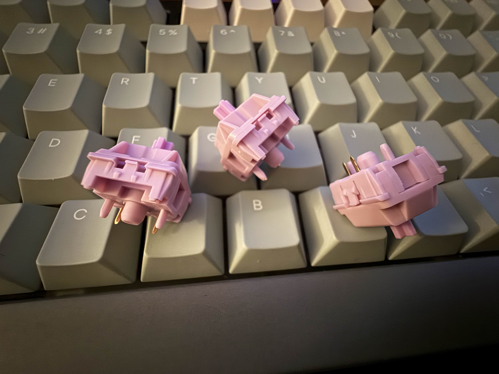
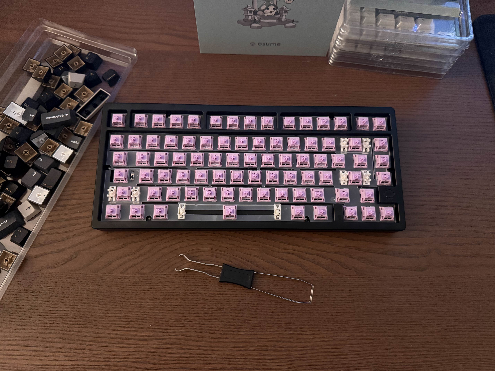
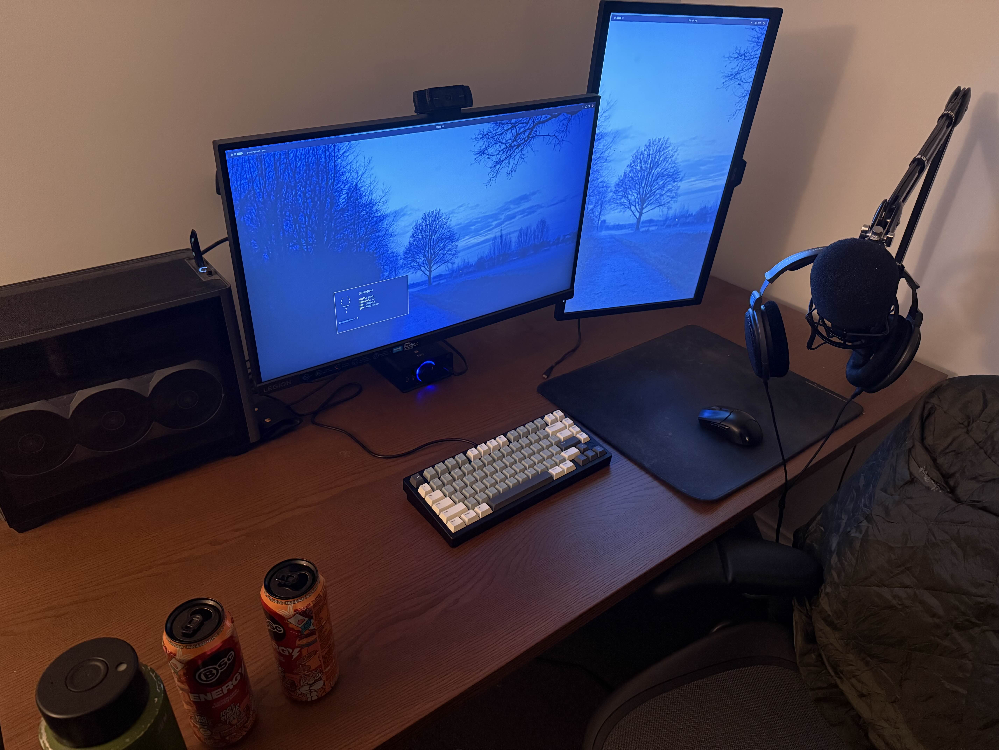

june 2025
lubing switches is the sort of thing that makes you reconsider after about 20 mins. you lay everything out nicely on your desk, gently open your overpriced container of krytox 205g0. you trick yourself into thinking it'll be relaxing. stems, springs and housings all perfectly lined up like you're performing a fucking surgical procedure. the first few go okay. you dip the brush, carefully spread a thin coat on the stem.. you might even feel a bit smug 'this isn't actually that bad..' by switch 30 you're gripping the brush like it's gonna run away, your neck hurts and you're probably overapplying out of sheer spite. you drop one, it disappears into the carpet and you spend 10 mins crawling around with your phone torch on. you can't be fucked anymore and grab a spare knowing that the missing one is gonna pop up later to mock you. eventually though, you zone out and the mundane actions become a bit hypnotic. it's almost peaceful, almost. but it's never actually relaxing it's just a manageable kind of purgatory. you're not thinking about making the switches better anymore you're just seeing how far you can stretch your patience before it snaps.

there's a very specific kind of peace that only comes after you've spent an hour inhaling flux and trying not to fuck up your PCB. you don't really expect to find heartsease hovering over your desk, breathing in solder smoke and burning tiny metal joints, but a dose was waiting there for me. you're standing there like an awkward statue kinda nervous, iron in hand, worrying that you've somehow managed to turn the tip up way too high and you're gonna melt something irreplaceable.. you tape down the stabs properly cause last build one had the nerve to slip while your left shift solder was setting. lets be honest though... no amount of preparation ever actually banishes doubt. the first switch always feels like shit. the solder bubbles unevenly, the flux feels like you got fucking smoke bombed and you start to hold your breath like that will help. but you move on to the 2nd and the 3rd, and eventually by switch 10 the rhythm kicks in. hit the copper, tap the solder, heat the pad, watch it flow.. mound after mound. once that ritual sets in you seemingly lose time, you look up and you realise you just finished row 4 and whatever you were listening to in the background creeps back into your hearing as you come to. 81 switches finished. you click off the iron and sit there for a second, that weird good kind of emptiness sets in when you realise the daunting part is over and you have to test your connections.

you plug it in and boot up VIA. your heart rate spikes. did i bridge a pad? did i fry a diode? you hesitate for half a second before pressing that first key, expecting the worst. but this time, miraculously, nothing’s fucked. every keystroke registers clean. you stare at the screen a little longer, silently suspicious, half expecting disaster to strike late. but it doesn’t. you've done all this before, it was gonna work.. you wonder why you always assume the worst, maybe because when you're building something optimism feels like arrogance.

i saw the osume mori caps when shopping for the build and immediately fell in love. id already acquired the black case so i was a bit worried about the match but after enough deliberating i just went for it. 180 quid for keycaps was making my head spin but fuck it i had to have them. it arrived in packaging that felt nicer than most of my actual belongings.. i thought id accidentally ordered some artisan skincare or something instead. i was worried the gentle forest green palette would clash badly on the almost brutalist anodised black case but it worked perfectly. the contrast wasn't muddy, it elevated the board. something delicate juxtaposed against something industrial. it feels quiet, refined and cohesive. suddenly the price didn't seem absurd, i mean it definitely was but at least now it was ridiculous in a way i could defend to myself. i need a cable though, the matching mori cable that they sell has this white net sleeving that makes it look like a shoelace on a TN. if anyone has a connection for a custom cable hit my inbox pls. i'm looking for a black cable with grey sleeving and a dark green aviator. it's gonna bring it all together so nicely.
i could waste your time here dropping the same stupid tired buzzwords that you see on all the vendor sound tests like 'creamy', 'thocky', 'poppy' whatever the fuck. but when you're sitting there typing you don't want whatever sounds good on someone elses mic you're chasing a sound that actually sounds right to you. something deliberate, something you imagined but probably haven't heard before. i went with sillyworks hyacinth v2us. these things knocked over my expectations so hard. linears but not the kind that feel like they're gliding through nothing. there's this purposeful friction to the slide. the springs are snappy without feeling harsh and the bottom out isn't hollow or plasticky. it's a rich, resonant clack, like a rain drop hitting a hardwood table. deep, textured, confident sound profile. each keystroke lands exactly as intended and the acoustics couldn't be better. that's the heart of it i think, not matching the meta sounds but discovering something that makes you genuinely excited to sit down and type for no reason at all.

the truth that people don't tend to admit is that when you build a board, you're the only person that's ever gonna truly give a shit. your mates aren't gonna notice the careful stab clipping and balancing and nobody at work cares that your spacebar has a distinct perfect landing. you'll never fully articulate the tonal balance you've spent days crafting and you sure aren't winning any awards for the solder job. but that's exactly the point, you build the keyboard for yourself. it's not about dropping specs in the forum threads or the inane terminology that most people wont understand. it's about taking the time to burn your fingers a bit, lose some switches in the carpet, worry about the colour scheme, live with a few imperfections, and eventually come out the other side with something that is one of one that you fucking adore and will never part with. it's about having something that makes you want to write. if you're thinking about building something just to build it? you probably should.
now stop reading about my board and go make your own.
(if you read all this and still want to talk keyboards, let's go.)
← back to blog index